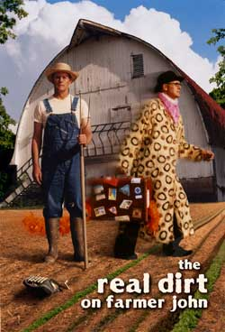

John Peterson grew up on an iconic Midwestern farm in Illinois withbig red barns, dairy cows, expansive fields and neighbors workingtogether to harvest crops. His father died when John was ateenager, so he took over running the farm. Over the next decade,he went deeper and deeper into debt and eventually had to selleverything except the farmstead and 22 acres.
It's an old story ? thousands of farmers across the United Stateshave lost their farms. Many moved on into regular jobs and suburbanlifestyles, but John took a different path and started over as anorganic farmer. The journey of this eccentric artist-poet-farmer isthe subject of the acclaimed documentary film,The Real Dirton Farmer John.
Much of the movie's footage came from Farmer John's childhood. Hismother, Anna, filmed happy 4-H meetings and workday picnics; barnbuilding and threshing; her elderly father collecting eggs; herchildren running through sunlit fields and riding on the tractorwith their dad. But this sunny picture of farming gives way to itsdarker side as the movie progresses, exploring the sad fact of farmfailures and healthy soils lost to suburban sprawl. In one poignantinterview, an old farmer chokes up as he says, 'I just hate to seeall that concrete being poured into the land.'
The Real Dirt finally offers redemption when the film shifts to anexploration of a new way of farming: the small-scale, organic modelthat Mother Earth News readers know so well. Eventually,Farmer John dives into community supported agriculture, launchingone of the country's most successful CSAs,AngelicOrganics, which produces food for more than 1,000 families inthe Chicago area. Recently, those shareholders helped the farmacquire 38 adjacent acres.
Farmer John and the crew at Angelic Organics have also written aquirky cookbook:Farmer John's Cookbook: The Real Dirt on Vegetables. It provides hundreds of seasonal recipes from CSA members and farmers, and most of them offer new ways of preparing the familiar: Baked Cucumbers in Basil Cream, Saut?ed Radishes with Arugula, Sweet Zucchini Crumble. But there is much more than recipes in the cookbook's 360 pages, including comments from the cooks, letters from CSA members, excerpts from Farmer John's weekly newsletter, essays by nutrition experts and even a few poems. These tidbits spice up the basic fare and offer readers the flavor of an unusual and admirable farm.
The Real Dirt on Farmer John, which has earned numerous awards,will be available on DVD in 2007. Learn more atwww.angelicorganics.com orwww.therealdirt.net. To orderFarmer John's Cookbook: The Real Dirt on Vegetables, visit MotherEarthShopping.com.
|
 |
|
|